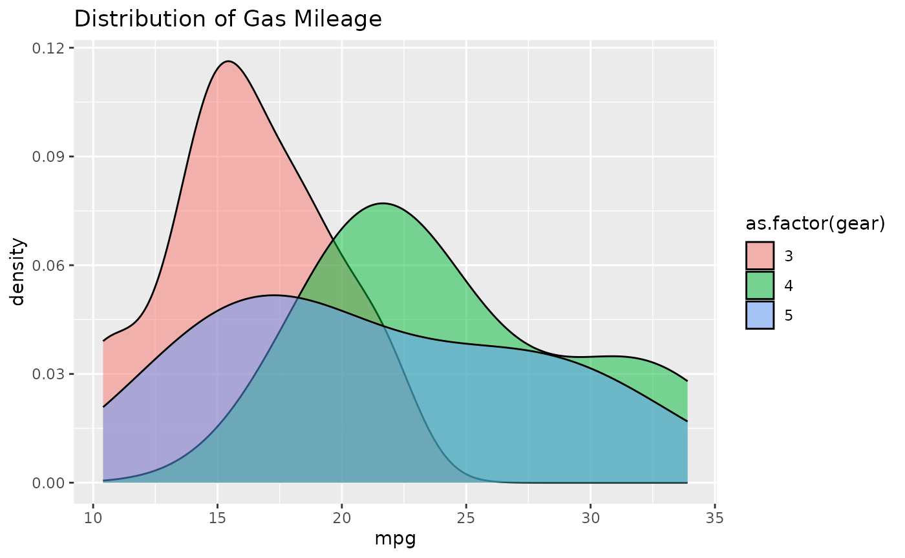

The following manual will present various ways to add plots and
charts to openxlsx2 worksheets and even chartsheets. This
assumes that you have basic knowledge how to handle
openxlsx2 and are familiar with either the default
R graphics functions like plot()
or barplot() and grDevices, or with the
packages ggplot2, rvg or
encharter and mschart. There are plenty of
other manuals that cover using these better than we could ever tell you
to.
library(openxlsx2) # openxlsx2 >= 1.26 for enharter support
## create a workbook
wb <- wb_workbook()Add plot to workbook
You can include any image in PNG or JPEG format. Simply open a device
and save the output and pass it to the worksheet with
wb_add_image().
Add {ggplot2} plot to workbook
You can include ggplot2 plots similar to how you would
include them with openxlsx. Call the plot first and
afterwards use wb_add_plot().
if (requireNamespace("ggplot2")) {
library(ggplot2)
p <- ggplot(mtcars, aes(x = mpg, fill = as.factor(gear))) +
ggtitle("Distribution of Gas Mileage") +
geom_density(alpha = 0.5)
print(p)
# Add ggplot to the workbook
wb$add_worksheet("add_plot")$
add_plot(width = 5, height = 3.5, file_type = "png", units = "in")
}
#> Loading required namespace: ggplot2
ggplot2 output written into the worksheet
Add plot via {rvg}
If you want vector graphics that can be modified in spreadsheet
software the dml_xlsx() device comes in handy. You can pass
the output via wb_add_drawing().
if (requireNamespace("ggplot2") && requireNamespace("rvg")) {
library(rvg)
## create rvg example
p <- ggplot(iris, aes(x = Sepal.Length, y = Petal.Width)) +
geom_point() +
labs(title = "With font Bradley Hand") +
theme_minimal(base_family = "sans", base_size = 18)
tmp <- tempfile(fileext = ".xml")
rvg::dml_xlsx(file = tmp, fonts = list(sans = "Bradley Hand"))
print(p)
dev.off()
# Add rvg to the workbook
wb$add_worksheet("add_drawing")$
add_drawing(xml = tmp)$
add_drawing(xml = tmp, dims = NULL)
}
#> Loading required namespace: rvg
#> Warning: Font families not found on this system and replaced by defaults:
#> "sans". Use gdtools::font_family_exists() to check availability.Adding {encharter} plots
if (requireNamespace("encharter")) {
library(encharter)
df_bar <- data.frame(
Product = c("Software", "Services", "Hardware", "Support"),
Q1 = c(310, 195, 140, 85),
Q2 = c(340, 210, 130, 90),
Q3 = c(375, 225, 125, 95),
Q4 = c(420, 250, 120, 105)
)
wb <- wb_add_worksheet(wb, "add_encharter", grid_lines = FALSE)
wb <- wb_add_data_table(
wb, sheet = "add_encharter", x = df_bar,
dims = "A1", table_style = "TableStyleMedium2"
)
wb <- wb_set_col_widths(wb, sheet = "add_encharter", cols = 1:5, widths = c(12, 8, 8, 8, 8))
wb_df <- wb_data(wb)
chart <- ec("barChart")
chart$set_chart_title("Quarterly Revenue by Product (EUR k)", bold = TRUE)
chart$set_y_axis(min = 0, format = "#,##0", grid_lines = TRUE, grid_color = "EEEEEE")
colors <- c("2E4057", "048A81", "E84855", "F4A261")
quarters <- c("Q1", "Q2", "Q3", "Q4")
cols <- c("B", "C", "D", "E")
variables <- names(wb_df)
for (i in seq_along(quarters)) {
chart$add_series(
name = variables[i + 1L],
label = variables[1L],
data = wb_df,
color = colors[i]
)
}
chart$set_legend_style(pos = "bottom")
wb <- wb_add_encharter(wb, sheet = "add_encharter", graph = chart, dims = "G1:P18")
}
#> Loading required namespace: encharterA broad selection of potential chart types available to
encharter [@encharter] can
be found in the project homepage: https://github.com/JanMarvin/encharter and in its
examples folder. The package was created specifically to support various
chart types in openxlsx2. This includes combo charts, as
well as several chart features such as trend lines, secondary axis and
modern spreadsheet charts such as Box and Whisker charts. The package
supports the openxlsx2 functions wb_color()
and fmt_txt() to tweak colors and text.
Add and fill a chartsheet
Finally it is possible to add encharter objects into
chartsheets. These are special sheets that contain only a chart object,
referencing data from another sheet.
if (requireNamespace("encharter")) {
# add chartsheet
wb <- wb |>
wb_add_chartsheet() |>
wb_add_encharter(graph = chart)
}Add {mschart} plots
Support for the mschart package provides functionality to add charts that can be used with spreadsheets. This might be useful for users of the officer package.
if (requireNamespace("mschart")) {
library(mschart) # mschart >= 0.4 for openxlsx2 support
## create chart from mschart object (this creates new input data)
mylc <- ms_linechart(
data = browser_ts,
x = "date",
y = "freq",
group = "browser"
)
wb$add_worksheet("add_mschart")$add_mschart(dims = "A10:G25", graph = mylc)
}
#> Loading required namespace: mschart
#>
#> Attaching package: 'mschart'
#> The following object is masked from 'package:ggplot2':
#>
#> set_theme